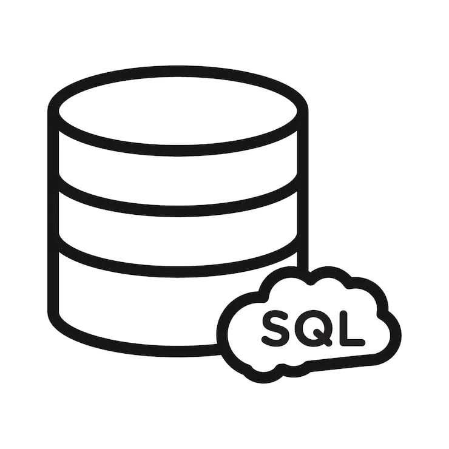

ACCÈS DASHBOARD
[AUTHENTICATION BYPASSED]
L'injection SQL a fonctionné : vous êtes connecté sous le compte admin du panneau de gestion Web.
L'interface propose un formulaire d'upload de fichiers pour les mises à jour et un onglet d'inspection des configurations système.